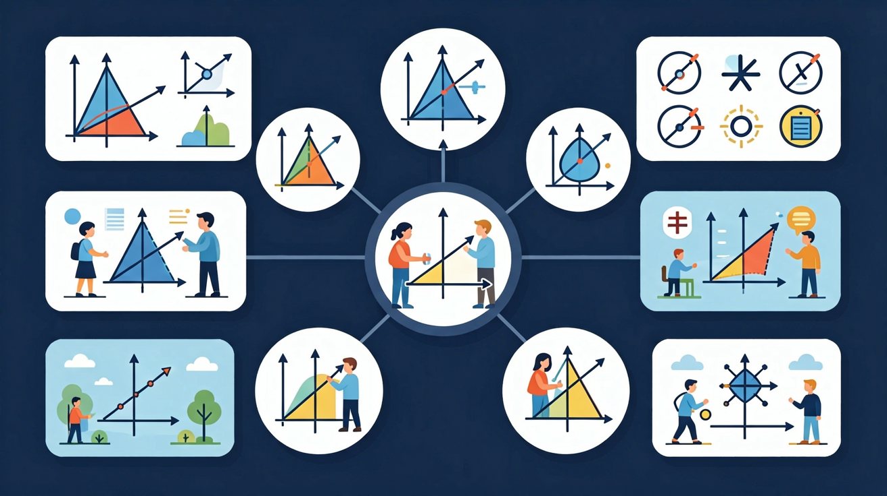
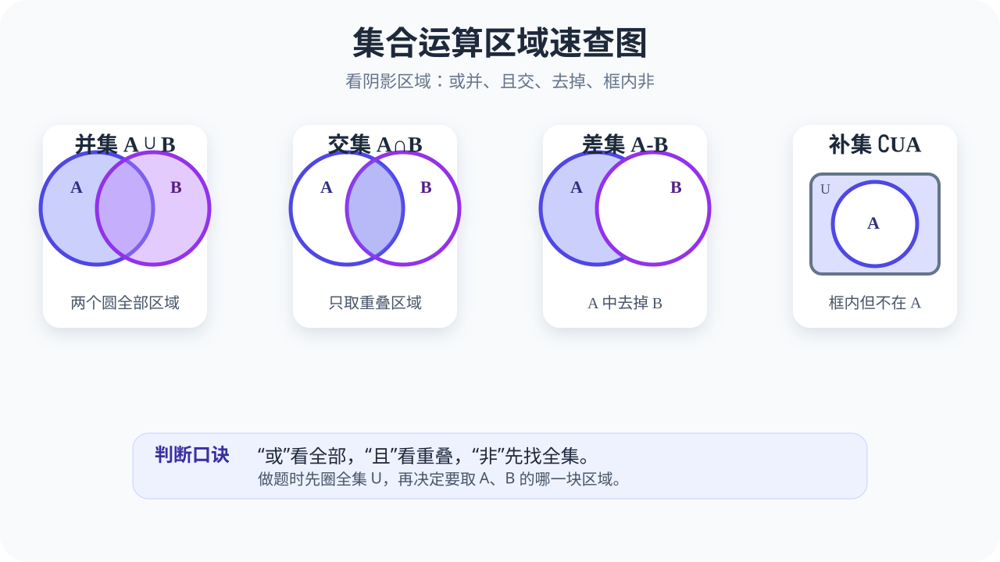

🎯 能说出并集、交集、补集的数学符号表示
🎯 能判断给定元素属于哪种集合运算结果
🎯 能计算两集合交并补后的元素总数
❓ 为什么有时候两个集合加起来会有重复元素？
❓ 数学里的‘或’和语文里的‘或’意思一样吗？
❓ 补集为什么一定要先画个大框框？
学完这一课，这些问题你都能自信地回答。
并集 · 交集 · 补集
集合A={1,2}，B={2,3}，则A∩B是？
若全集U={1,2,3,4}，A={1,2}，则A的补集是？
并集就像把两个圈的成员全部合并在一起。数学中，并集用符号 ∪ 表示。想象你有A班和B班两个班级，并集就是这两个班所有学生的集合，重复的名字只算一次。
由所有属于集合 A 或 属于集合 B 的元素所组成的集合，叫做集合 A 与 B 的并集。关键词是"或"——只要属于其中一个集合即可。
在 Venn 图中，并集就是两个圆覆盖的所有区域（包括重叠部分）。可以用阴影或高亮来表示。
例 1：若 A = {1, 2, 3}，B = {3, 4, 5}，求 A ∪ B。
解：A ∪ B = {1, 2, 3, 4, 5}（把两个集合的所有元素合在一起，重复元素只写一次）。注意 3 同时在 A 和 B 中，但在并集中只出现一次。
调查班级同学参加文学社与科学社的情况
交集是两个圈重叠的部分，就像"既会篮球又会游泳"的人。只有同时满足两个集合条件（既在A中又在B中）的元素，才属于交集。
由所有属于集合 A 且 属于集合 B 的元素所组成的集合，叫做集合 A 与 B 的交集。关键词是"且"——必须同时属于两个集合。
在 Venn 图中，交集就是两个圆重叠的区域。这是两个集合"共同拥有"的部分。
例 2：若 A = {1, 2, 3}，B = {3, 4, 5}，求 A ∩ B。
解：A ∩ B = {3}（只有元素 3 同时出现在两个集合中）。交集可能只有一个元素，也可能是空集（如果没有公共元素）。
补集需要一个"全集 U"作为参考框架，就像"全班同学中不是少先队员的人"。补集研究的是"在全集中但不在该集合中的元素"。
设 U 是全集，A ⊆ U，则由 U 中所有不属于 A 的元素组成的集合，叫做集合 A 在 U 中的补集。记作 ∁UA 或 A 在 U 中的补集。
在 Venn 图中，补集是矩形框内、A 圆外部的区域。矩形框代表全集 U，A 圆代表集合 A，那么补集就是"框内圆外"的部分。
例 3：若 U = {1, 2, 3, 4, 5}，A = {1, 2, 3}，求 ∁UA。
解：∁UA = {4, 5}（在全集中但不在 A 中的元素）。注意补集是相对于全集 U 而言的，同一个 A 在不同的 U 下补集不同。
先看图形区域。并集看两个圆全部，交集看重叠，补集先看全集矩形框，再看圆外。
每一道题都拆成三步：确定全集 U，标出 A 和 B，最后决定取“或、且、非”哪一种区域。
集合运算不是背符号，而是在判断条件。A∪B 表示满足 A 或 B，A∩B 表示两个条件同时满足。
最常见错误是把并集和交集搞反。易错点：看到“和”“都”“同时”通常对应交集；看到“或”“至少一个”通常对应并集。
数据库查询、概率事件、问卷统计都在用集合运算。SQL 的 UNION 像并集，INNER JOIN 像交集。
现在你来当学校社团负责人，用集合运算解决实际问题。这是集合运算在生活中的真实应用。
某班有 45 名同学，12 人参加排球赛，20 人参加田径赛，6 人两项都参加。
问题 1：至少参加一项比赛的同学有多少人？（用并集公式：|A ∪ B| = |A| + |B| - |A ∩ B|）。这就是容斥原理在 Two sets 下的形式。
问题 2：两项都没参加的同学有多少人？（用补集思想：全班 - 至少参加一项的）。全集 U 是全班同学，A ∪ B 是至少参加一项的，那么补集就是两项都没参加的。
解：至少参加一项 = 12 + 20 - 6 = 26 人。两项都没参加 = 45 - 26 = 19 人。
问题 3：为什么容斥原理要减去交集？请画图解释。
分析：当我们直接把 |A| 和 |B| 相加时，交集 A ∩ B 中的元素被计算了两次（一次在 A 中，一次在 B 中）。所以需要减去一次 |A ∩ B|，让每个元素只被计算一次。这是容斥原理的核心思想。
拓展：如果是三个集合 A、B、C，公式会怎样？提示：|A ∪ B ∪ C| = |A| + |B| + |C| - |A∩B| - |A∩C| - |B∩C| + |A∩B∩C|。
Level 1 基础巩固：写出 A={1,2}，B={2,3} 的 A∪B 与 A∩B。
Level 2 能力应用：若全班 40 人，参加篮球 18 人，参加足球 15 人，两项都参加 5 人，求至少参加一项的人数。
Level 3 迁移挑战：请自己设计一个三集合统计问题，并解释为什么三集合容斥最后要加回 A∩B∩C。
现在不看静态图，自己切换运算。观察阴影区域如何随“并、交、补”变化，再把图形语言翻译成集合语言。

先独立作答，再点选项查看对错与错因。
某班有40人，其中25人参加数学竞赛，18人参加物理竞赛，10人两项都参加。问仅参加数学竞赛的有多少人？
集合A={1,2,3,4}，B={3,4,5,6}，则A∩B的补集是
学校社团中，参加合唱团或舞蹈社共有60人，其中仅参加合唱团的有32人，两项都参加的有12人。问舞蹈社总人数是多少？
已知全集U={x|1≤x≤10}，A={2,4,6,8}，B={3,6,9}，则A∪B的补集元素个数是____
答案：4
A∪B={2,3,4,6,8,9}，补集为{1,5,7,10}共4个元素
某年级120名学生中，80人选修物理，60人选修化学，两项都不选的有20人。则两项都选修的学生有____人
答案：40
至少选一门人数=120-20=100，根据容斥原理80+60-100=40
某班35人，20人参加数学社，15人参加文学社，5人同时参加，仅参加数学社的有？
集合运算律A∪(B∩C)=(A∪B)∩(A∪C)属于？
超市顾客中60%买牛奶，40%买面包，30%两者都买，两者都不买的占比是？
✅ 用Venn图展示重复计数问题
💡 忽略元素互异性
✅ 强调全集定义优先性
💡 未建立相对补集概念
口诀：并集或，交集且，补集框外走
类比：集合像快递分拣：并集是所有包裹，交集是两地都有的特产